Each one starts from a real headline: a news story or a Reddit post, with quotes from it. The top picture is today. The picture below it is the same moment as the brain reads it. One thing swaps. The red figure is the person it is about.
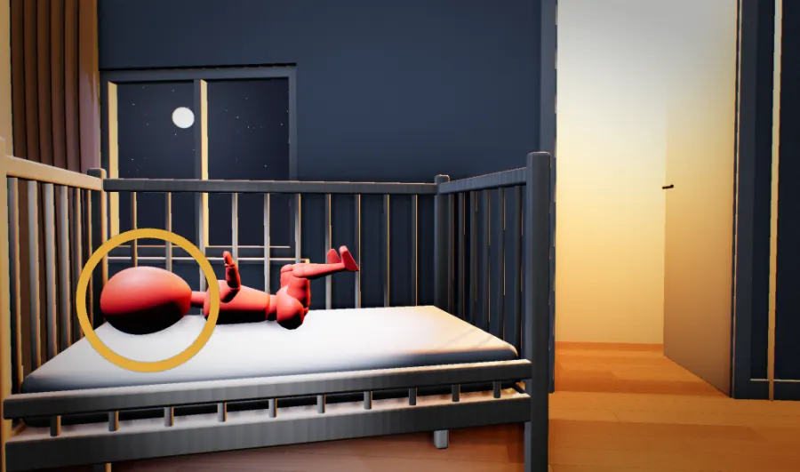
I’m going crazy... Baby cries the second I put her down.r/beyondthebump, September 2022her brain sees: alone, and a predator nearwhatthisreallyis.com/persongoingcrazybecausebabycries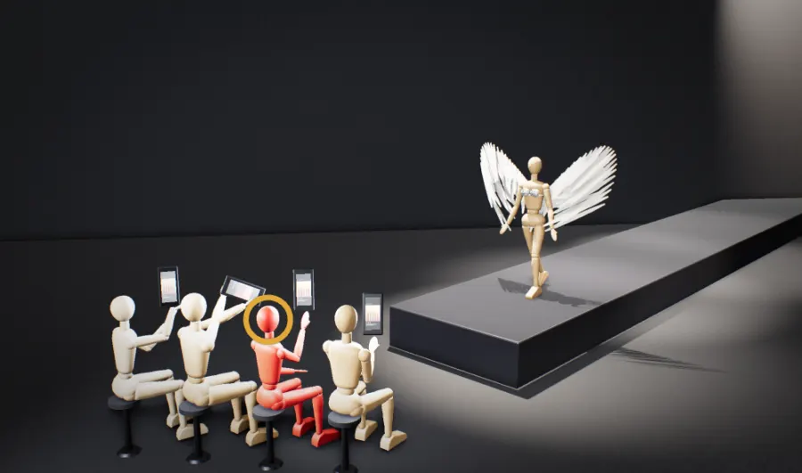
The Victoria’s Secret Fashion Show Returns. It Shouldn’t.The New York Times, 16 October 2024your brain sees: a show-off at the firewhatthisreallyis.com/outrageoverthelingerieshow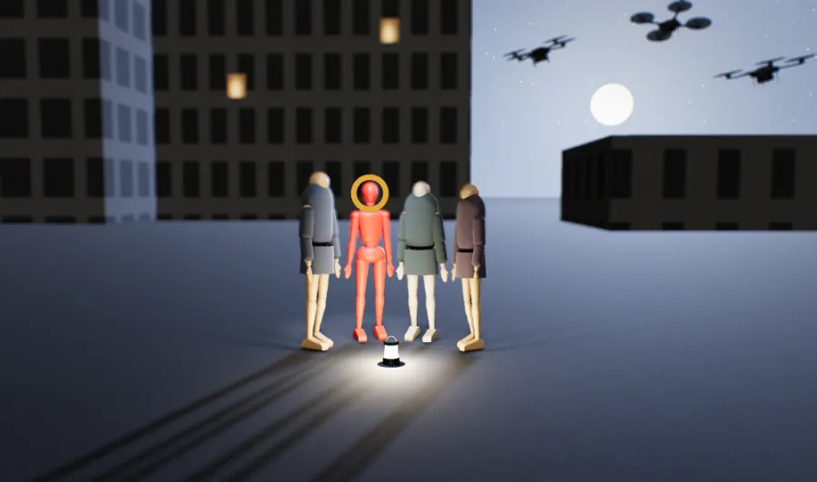
In Ukraine, living as normal is an act of defianceThe Economist, 23 November 2022their brains see: raiders on the hillwhatthisreallyis.com/ukrainekeepslivingunderattack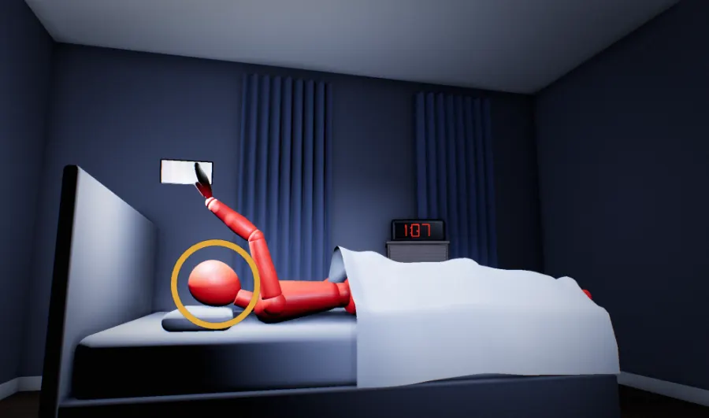
‘Revenge bedtime procrastination’ could be robbing you of precious sleepCNN, 15 February 2021your brain sees: broad daylightwhatthisreallyis.com/stayingupscrollingat1am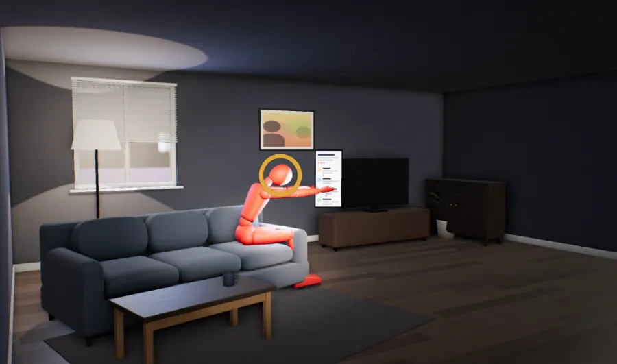
Does anyone else feel like most of the internet is just rage bait?r/nosurf, 2023your brain sees: a stranger insulting youwhatthisreallyis.com/theinternetisallragebait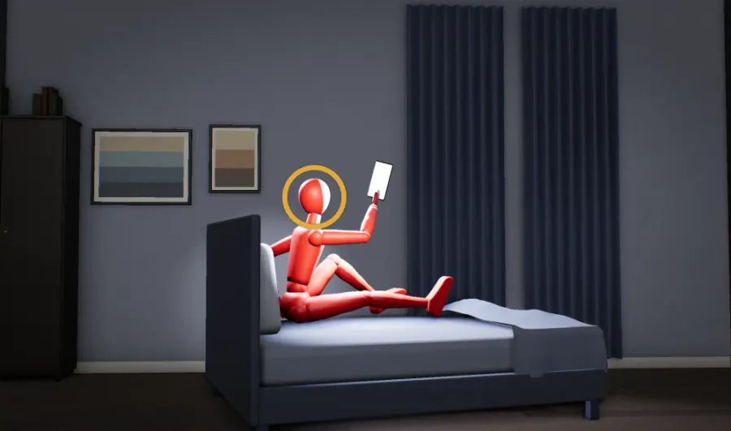
Far from the fighting, the Israel-Gaza war divides friends, familiesThe Washington Post, 3 November 2023your brain sees: the next camp burningwhatthisreallyis.com/friendsfallingoutovergaza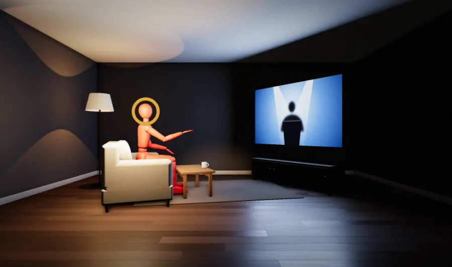
Minnesota bill labels Trump derangement syndrome as mental illnessThe Hill, 18 March 2025your brain sees: a man bossing the campwhatthisreallyis.com/billcallstrumpderangementanillness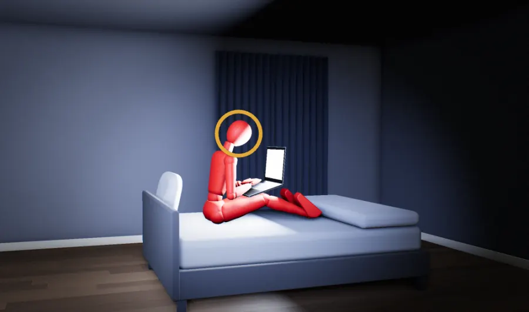
Can AI chatbots trigger psychosis in vulnerable people?Fox News, 5 January 2026your brain sees: a close friend listeningwhatthisreallyis.com/chatbotstriggeringpsychosis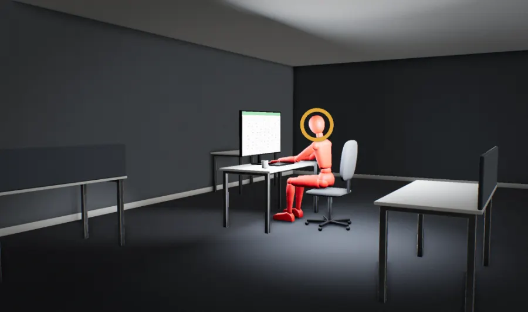
‘I had to guard an empty room’: the rise of the pointless jobThe Guardian, 4 May 2018your brain looks for: the people you feedwhatthisreallyis.com/paidtoguardanemptyroom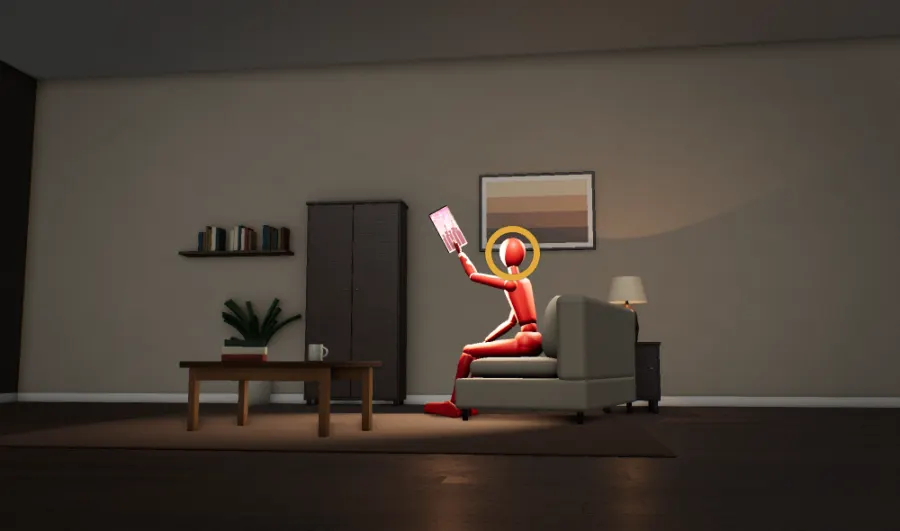
They Left Me Out, and I Saw It AllThe New York Times, 27 February 2019your brain sees: your group leaving youwhatthisreallyis.com/theyleftmeoutandisawitall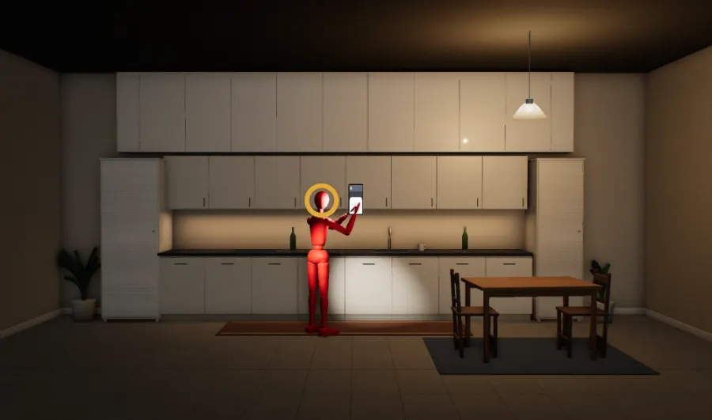
Struggle to handle real or imagined rejection? It could be a symptom of ADHD1News, republished from The Conversation, 8 July 2025your brain sees: the group turning coldwhatthisreallyis.com/cantcopewithrejection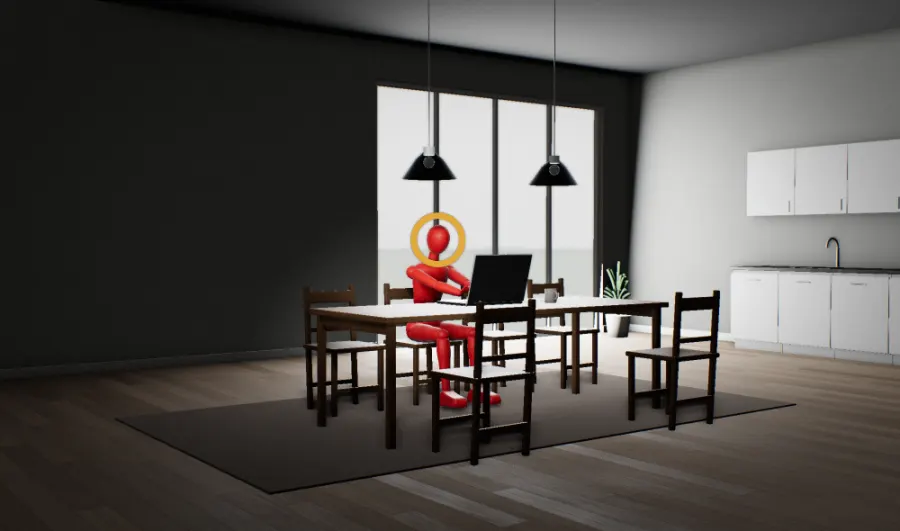
Home alone: Remote work fuelling the loneliness epidemicThe Irish Times, 19 December 2025your brain looks for: people beside youwhatthisreallyis.com/lonelyworkingfromhome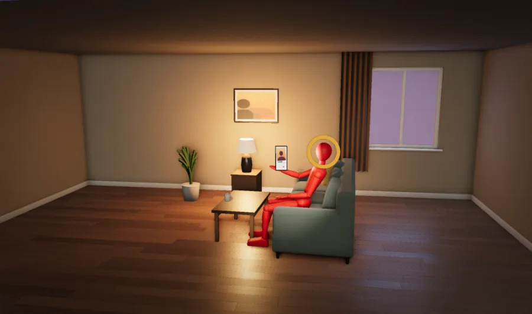
‘I’m fed up of swiping’: The singles choosing dating events over appsBBC News, October 2026your brain sees: a handful to choose fromwhatthisreallyis.com/fedupwithswiping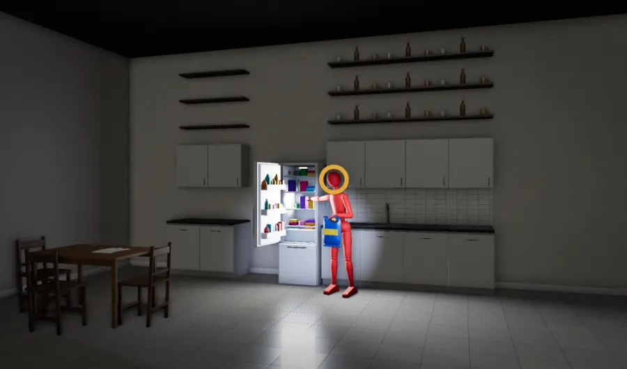
Can’t stop thinking about food? You’re far from aloneNews-Medical, 29 September 2026your brain sees: rare wild honeywhatthisreallyis.com/cantstopthinkingaboutfoodso now what: general suggestions, not medical advice · mechanisms, grades, circuit ages, level names, evidence tags and the order of each gradient are from Cor's live database (23 October 2026), with step names shortened; where each case sits is our draft reading · rendered from code · drafts: the copy is not yet checked against Cor · screenshots taken 22 October 2026 · quotes verbatim from the linked pages